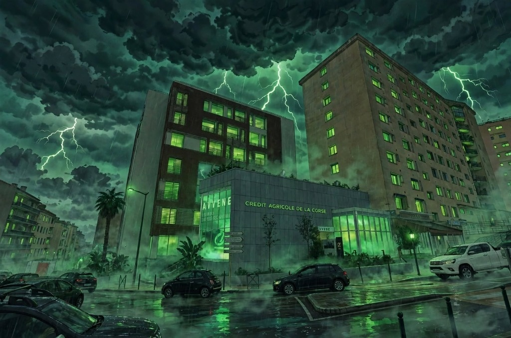

#01
[DOSSIER-22]
BANQUE & ÉPARGNE
SCELLÉ ISO 27037 : INTÈGRE
La Captation Bancaire & l'Évasion de l'Épargne Insulaire

PIÈCE ADMINISTRATIVE SOURCE DU DOSSIER CONSULTER LA PIÈCE →
Présentée à tort comme une terre assistée, la Corse est un réservoir net de liquidités bancaires spolié par les grands réseaux. Sur 6,42 milliards d'euros de dépôts collectés (et 11,54 milliards d'épargne financière brute totale), moins de 60 % sont réinjectés aux résidents. Chaque soir à 17h30, 2,57 milliards d'euros d'épargne dormante sont aspirés par nivellement automatique (cash pooling) vers Montrouge et Marseille pour nourrir le marché interbancaire et générer plus de 93,8 M€ de rente de trésorerie hors-sol. Révélations sur le projet d'absorption du Crédit Agricole Corse par PCA, l'abandon bancaire de 295 communes et modélisation de la Banque Territoriale de Corse.
MUNITION CITOYENNE : Téléchargez le bordereau prêt pour le tribunal administratif.
OUVRIR L'INSTRUCTION DU DOSSIER